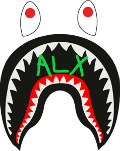

Hyperblog
Tu blog de confianza
Este es un título atractivo e interesante del post
Por otra parte, este es un parrafo de inicio donde vamos a explicar cosas increibles que se pueden hacer con ramas
Imagen local

Imagen de imgur.com